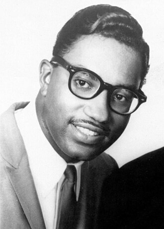

Bobby Rogers
Robert Edward Rogers was an American musician and tenor singer, best known as a founding member of Motown vocal group the Miracles from 1956 until his death. He was inducted, in 2012, as a member of the Miracles to the Rock and Roll Hall of Fame. In addition to singing, he also contributed to writing some of the Miracles' songs. Rogers is the grandfather of R&B singer Brandi Williams from the R&B girl group Blaque and is a cousin of fellow Miracles member Claudette Rogers Robinson.
Complete Discography & Tracklists (2)
2012 Echoes in the Canyon 🎵 0 Tracks
No tracks registered.